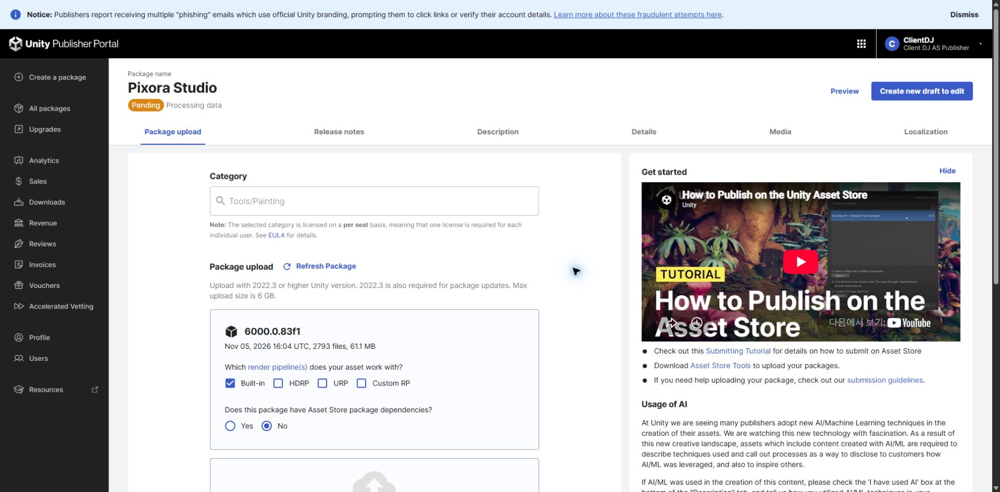

Tracefolio REPORTS & ISSUES
Tracefolio REPORTS & ISSUES아이소매트릭·전체 카메라 옵션 위치와 제출 후 버전 검토
완료아이소매트릭 시점과 전체 카메라 처리는 별도 설정입니다. Pixora Studio1.0.0은 Pending이며 수정본은 새 초안으로 준비하는 것을 권합니다.
작업 결과
설정 위치와 실제 제출 상태를 확인했습니다. 제품·제출 상태는 변경하지 않았습니다. 현재 제출된1.0.0에는 이후 타깃 범위·Undo·즉시 미리보기 수정이 포함되지 않았습니다.
변경 내용
적용 내용
전체 화면 픽셀화: Tools > TurnRoom > Pixora Studio > Pixel Camera, 왼쪽 픽셀 세부 설정 > 픽셀화 대상 > 전체 카메라. Full camera 접두어의 해상도·격자 옵션도 같은 카드에 있습니다. 선택 타깃만 처리하려면 선택한 오브젝트를 사용합니다. 아이소매트릭 시점: 씬 카메라 GameObject를 선택하고 Inspector의 아이소매트릭 카메라 > 아이소매트릭 시점에서35.264도 또는2:1/30도, 방향, 대상, 거리, 직교 크기를 편집합니다. 컴포넌트가 없는 일반 카메라에는 Add Component > TurnRoom > Pixel Camera > Isometric Camera로 추가할 수 있습니다. 두 설정은 서로 독립이며 단일 아이소매트릭 풀카메라 항목은 없습니다.
검증
실제 포털: Pixora Studio1.0.0 Pending/Processing data, 버전 입력 비활성, Create new draft to edit 표시. 업로드2,793 files/61.1MB로 이전 로컬 파일 수와 최종 일치했습니다. DDT2.0.2와 Entity Forge0.3.2-preview도 Pending입니다. 로컬 Inspector/창 소스와 한국어 번역 키를 대조했습니다. 
남은 사항
권고: Pixora 수정본을 별도 초안으로 준비하고1.0.1로 구분하는 편이 명확합니다. 다만 Pending 수정에 버전 증가가 반드시 필수인지, 새 초안 생성이 기존 심사 대기열에 주는 영향은 확인한 공식 문서에 설명되지 않았습니다. Create new draft to edit는 실제 초안을 만들 수 있어 검토 요청만으로 누르지 않았습니다. 현재 심사를 그대로 유지하려면 승인·출시 후1.0.1 업데이트 경로가 있습니다. 문제 있는 예제/Undo 동작이 첫 출시본에 포함되는 것을 피하려면 출시 전 수정본 심사 경로를 우선 검토하는 것을 권합니다. 공식 근거: 제출 상태, 출시 후 업데이트. DDT/Entity Forge에는 이번 Pixora 수정만을 이유로 버전을 올릴 필요가 없습니다. 교훈 검토: 시점/처리 범위 독립 설명은 기존 Pixora 지침과 일치, 추가 전역 변경 없음.
작업 시간
- 제안 시간: 3~5분
- 실제로 완료된 시간: 시작 2026-11-06 01:59:50 KST. 소스·실제 포털·공식 문서 검토 완료02:02 KST. 보고서 배포 확인 별도.
- XERJ: 미사용 — 직전 Status에서 노드 미실행을 확인했으며 PixelCamera Inspector와 Runtime은 등록된 검색 범위 밖입니다. 현재 파일과 번역 키를 직접 읽고 rg로 대조했습니다.